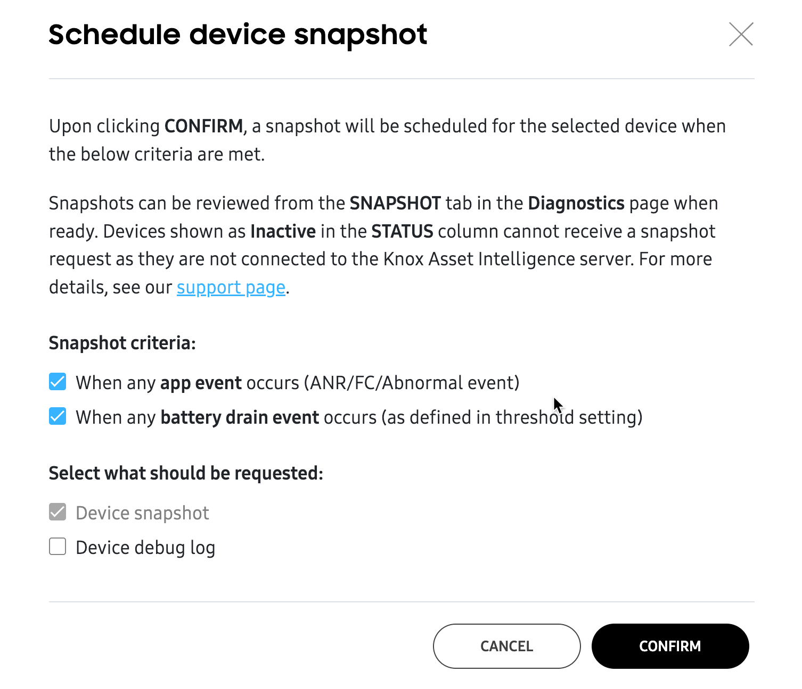
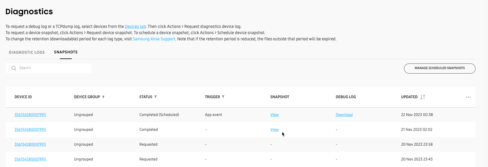
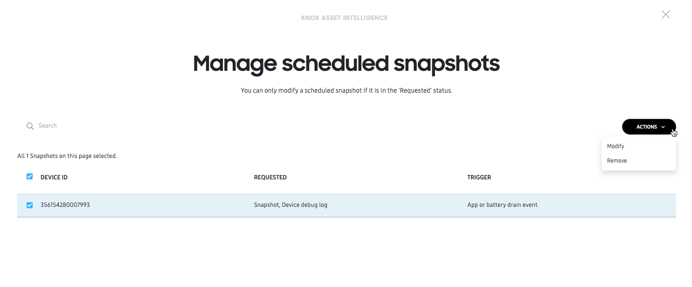
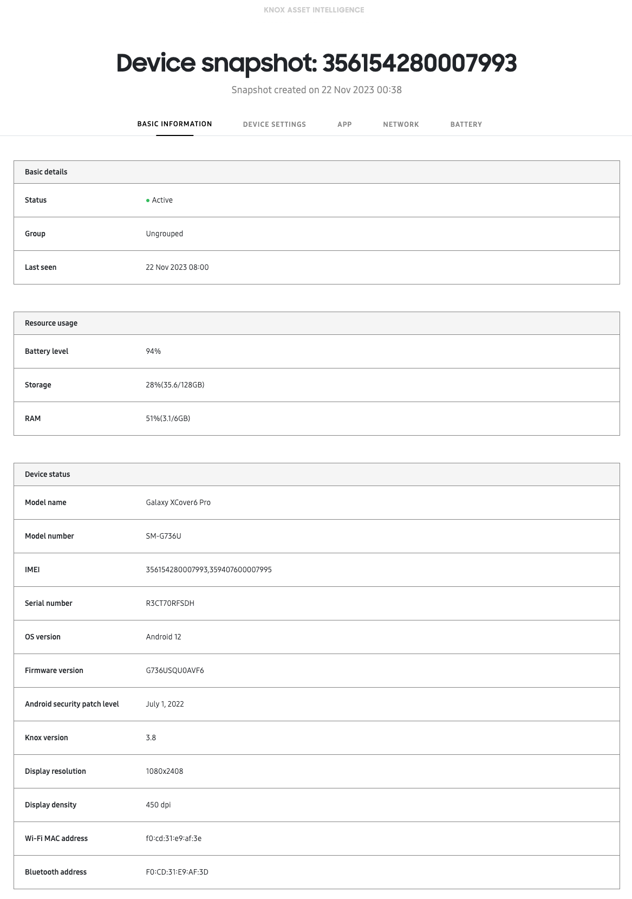

View diagnostics
Last updated December 6th, 2023
The Diagnostics page contains a history of all Diagnostic logs and Snapshots received from your devices. You can use the information on this page to help identify and troubleshoot issues related to your device’s app, battery, or network performance. This page contains two tabs:
| Tab | Description |
|---|---|
| Diagnostic logs | Provides in-depth and detailed log files — such as the Device debug log, TCPdump log, and Battery history — that can be downloaded for offline analysis. |
| Device snapshots | Provides a detailed summary of your device’s status and settings, as well as its app, battery, and network insights, presented in a single and consolidated page on the console. Snapshots can’t be downloaded for offline analysis. |
Request Diagnostic logs
Diagnostic logs provide detailed information related to a device activity and overall operation, at the time of request. To request Diagnostic logs:
-
Go to the Devices page, then select one or more devices and click ACTIONS > Request diagnostics device log.
-
In the Request diagnostics device log popup, select the type of log file you want to request.
Log Description Device debug log Helps you identify issues related to device apps, battery, network connectivity, or overall operation. TCPdump log Helps you identify network traffic issues between the device and servers. TCPdump logs can only be captured from devices running Android 12 or higher.
-
(Optional) If you want to request debug logs without user consent, enable the Request silently option. This option is only available on fully managed and dedicated devices (such as kiosks). Devices that aren’t fully managed (such as company-owned devices with a work profile) will always prompt the user for consent before collecting log data.
This option only works for Device debug logs. You can’t silently request TCPdump logs on the console.
-
Click CONFIRM to make your device log request.
Optionally, device users can send a Diagnostic log file by using the Knox Asset Intelligence agent app. To learn more about sending a device log from the Knox Asset Intelligence agent app, see Use the agent app.
View Diagnostic logs
When you visit the Diagnostics page, you’ll land on the default DIAGNOSTIC LOGS tab. Similar to the Devices page, a list displays all of your Diagnostic logs and data about them. You can customize its fields by clicking the options button (…) and selecting up to six additional columns to display, and if you click a DEVICE ID in the table, you’ll open the same Expanded device details panel, allowing you to quickly view a detailed device summary and other important data.
In the table, you’ll find information related to each Diagnostic log sent to the server. Once log files are delivered to the server, they are available for viewing and downloading up to 30 days (by default) from the time of creation, after which the download and view links expire. To change the retention period, visit Samsung Knox Support.
The following information is available in the table:
| Field | Description |
|---|---|
| DEVICE ID | The device's unique identifier (always enabled). If the device supports two SIMs, only the primary IMEI is shown. |
| DEVICE GROUP | The name of the group the device belongs to. If the device doesn't belong to a group, its status is Ungrouped. |
| STATUS |
The current status of the request. The statuses are:
|
| DELIVERY | The download link for the log file, if available. |
| CATEGORY | The log type, whether TCPdump, Battery history, or All. |
| ERROR REPORT | The details of any error messages sent by a device user using the error reporting feature of the agent app. |
| UPDATED | The time and date when the device debug log status was last updated. |
| REQUESTED BY | The email address of the admin who requested the log. |
Back in the expanded device details panel, if you click VIEW DEVICE LOG, you can open the complete 6-month history for that device on a new page. If new log data becomes available on the server, you don’t need to exit out of this page. Simply click REFRESH to get the latest data, or click VIEW HISTORY to view all available logs for that device.
Request a Snapshot
Similar to a Diagnostic log, a Snapshot provide detailed information related to a device’s overall operation, however, it can’t be downloaded for offline viewing or analysis. To request a Snapshot, go to Devices, then select one or more devices and click ACTIONS > Request device snapshot or Schedule device snapshot.
| Action | Description |
|---|---|
| Request device snapshot | Request a snapshot immediately. Select this option to request a snapshot without any follow-up action. |
| Schedule device snapshot | Create a condition where a snapshot is generated as soon as a specific event occurs. Select the event type in Snapshot criteria, select whether you want to optionally request a Device debug log along with the snapshot, then click CONFIRM. If you select more than one criteria, a snapshot will generate when the first event occurs. |

View Snapshots

Snapshots are available on the SNAPSHOTS tab of the Diagnostics page.
In the table, you’ll find information related to each Snapshot log sent to the server. You can customize its fields by clicking the options button (…) and selecting up to six additional columns to display, and if you click a DEVICE ID in the table, you’ll open the same Expanded device details panel, allowing you to quickly view a detailed device summary and other important data.
Once snapshots are delivered to the server, they are available for viewing, and any accompanying device debug logs are available for downloading up to 30 days (by default) from the time of creation, after which the download and view links expire. To change the retention period, visit Samsung Knox Support.
The following information is available in the table:
| Field | Description |
|---|---|
| DEVICE ID | The device's unique identifier (always enabled). If the device supports two SIMs, only the primary IMEI is shown. |
| DEVICE GROUP | The name of the group the device belongs to. If the device doesn't belong to a group, its status is Ungrouped. |
| STATUS |
The current status of the request. The statuses are:
|
| TRIGGER | The snapshot criteria, if a snapshot was scheduled. |
| SNAPSHOT | Where you'll find the View link for all successful snapshot requests. If your snapshot is older than your retention policy period, you'll see View (Expired). |
| DEBUG LOG | Where you'll find the Download link for successful scheduled snapshots that included the optional device debug log. If your device debug log is older than the retention policy period, you'll see Download (Expired). If the user does not grant device debug log permissions, you'll see – (Denied). |
| UPDATED | The time and date when the snapshot status was last updated. |
| REQUESTED BY | The email address of the admin who requested the snapshot. |
If you’ve scheduled one or more Snapshots, you can click MANAGE SCHEDULED SNAPSHOTS to view a list of all scheduled snapshots for your fleet. In the list, you’ll see the device ID, the type of request (Snapshot or Snapshot with Device debug log), and the criteria to trigger the snapshot.
Select a device from the list and click ACTIONS to either Modify the schedule details or Remove the device from the schedule, thus cancelling the request.
Scheduled snapshots can only be modified if they have the Requested status.

Once the scheduled Snapshot (and its accompanying Device debug log) delivery process completes — whether the snapshot succeeded or failed — the device disappears from the Managed scheduled snapshots list.
If an on-demand or scheduled snapshot is successful, it appears on the SNAPSHOTS tab of the Diagnostics page. Click View in the table’s SNAPSHOT column to view the snapshot details.
On the Device snapshot page, you’ll see detailed information about your device’s status and performance. Use the tabs to navigate between the different types of device information.
| Tab | Description |
|---|---|
| BASIC INFORMATION | Provides system information, like the current battery, storage, and RAM usage levels, plus the IMEI, serial number, Android version, and other related data. |
| DEVICE SETTING | Lets you know whether system settings like Bluetooth, Wi-Fi, Wi-Fi calling, location, and others are enabled or disabled. |
| APP | Provides a quick summary of your app insights, letting you see the top five apps with the highest battery and data consumption, as well as any app issues within the last 24 hours. |
| NETWORK | Lets you see your Wi-Fi and mobile network signal strength at the time of capture, as well as other network information like SIM information, SSID, MAC addresses, and more. |
| BATTERY | Provides battery status information, like the current state of health, voltage, and charging status. Also, reports any battery charging events within the last 24 hours. |

On this page
Is this page helpful?